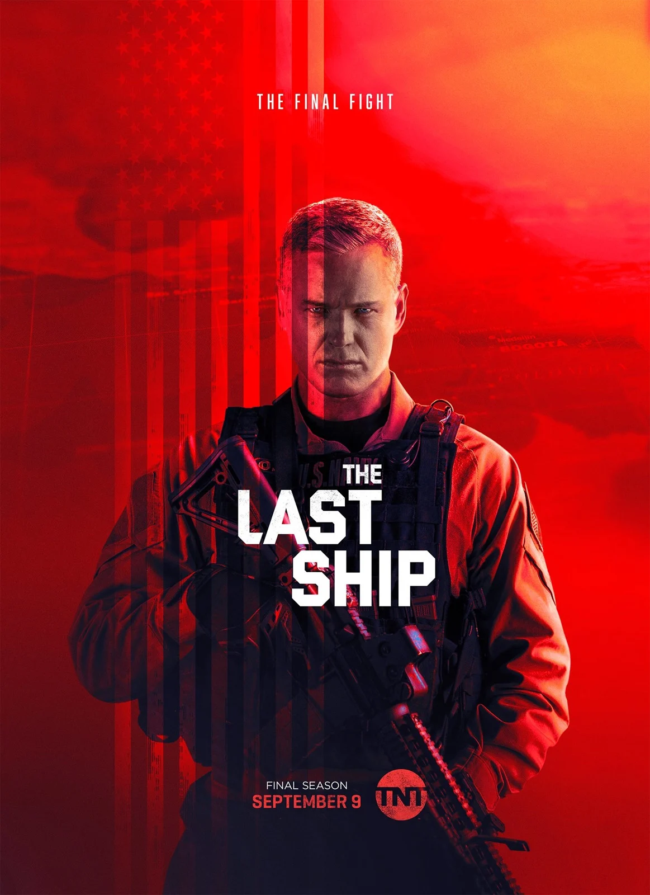

Computer Science Student at Gamal Abdel Nasser University in Conakry
I am a young enthusiast passionate about web development and creating innovative websites. As a web developer, I am skilled at creating interactive, attractive, and aesthetically pleasing websites using a combination of programming languages such as HTML, CSS, and JavaScript, as well as with the CMS WordPress. My passion for design allows me to pay special attention to visual details while ensuring an optimal intuitive user experience.
Mr. ROBOTElliot Alderson is a young computer programmer living in New York, who works as a cybersecurity engineer for Allsafe Security. He constantly struggles with depression, and his thought process seems heavily influenced by paranoia. He hacks into people's accounts, which often leads him to act as a cyber-vigilante. Elliot meets "Mr. Robot," a mysterious anarchist who wants to recruit him into his hacker group known as "Fsociety." Their goal is to restore balance to society by destroying the infrastructure of the world's largest banks and corporations, including the conglomerate E Corp. (dubbed "Evil Corp." by Elliot), which, as a client, represents 80% of Allsafe Security's revenue. |
|
|  |
THE LAST SHIPAfter spending several months in the Arctic on an ultra-secret mission, the crew of the USS Nathan James, a United States Navy destroyer of the Arleigh Burke class, horrifyingly discovers that an epidemic has killed most of the world's population. The government of the United States no longer exists. Protected by the oceans, the commander and the 200 people under his command are among the last survivors on the planet. A scientist on board must urgently find a vaccine before the total extinction of the human species... |
PRISON BREAKLincoln Burrows is wrongly accused of killing the brother of the Vice President of the United States. Sentenced to death, he is incarcerated in Fox River State Penitentiary awaiting his execution. His brother, Michael Scofield, a brilliant engineer who believes in his innocence, will help him escape before the fateful date. To do this, Michael gets the prison's blueprints tattooed on his chest, arms, and back, then he commits a robbery to be imprisoned there as well. Once inside Fox River, Michael will attempt to escape with his brother using the plans tattooed on his body. |
|
CASA DE PAPELA mysterious man, nicknamed The Professor, plans the most audacious heist ever attempted. To carry out his plan, he recruits eight of the best criminals in Spain who have nothing to lose. The goal is to infiltrate the Royal Mint of Spain to print €2.4 billion in 50 € bills in less than eleven days, without any casualties - despite the presence of 67 hostages, including the daughter of the UK Ambassador, Alison Parker, and without any romantic relationships between the robbers... The Professor also instructs the gang members to choose a pseudonym based on city names: Tokyo, Rio, Berlin, Denver, Nairobi, Oslo, Helsinki, and Moscow. |
|
NARUTOIn the Naruto series, Naruto is a young ninja from the village of Konoha. Host of the Nine-Tails fox demon, a creature that attacked the village in the past, he is rejected by the other villagers. His ambition is to become Hokage, the village leader, in order to earn the respect of the inhabitants. With a cheerful and determined character, he manages throughout the series to make friends with several ninjas from the village, especially with Sasuke Uchiha, whom he considers as his brother and rival. As he progresses in the series, he manages to gain acceptance from the villagers, eventually becoming a hero to them after protecting them. He eventually achieves his dream by becoming the Seventh Hokage. |